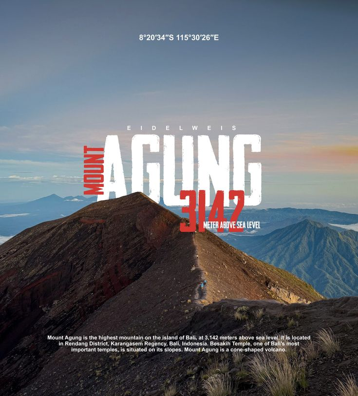

Gunung Agung
Bahasa Indonesia
Gunung Agung adalah gunung tertinggi di Bali dan dianggap suci oleh masyarakat Hindu Bali. Dalam kepercayaan setempat, gunung ini menjadi tempat bersemayam para dewa dan pusat keseimbangan alam. Karena itu, masyarakat menghormatinya melalui upacara dan persembahan.
English
Mount Agung is Bali’s highest mountain and is considered sacred by Balinese Hindus. In local belief, it is a dwelling place of the gods and a center of natural balance. For this reason, people honor it through ceremonies and offerings.